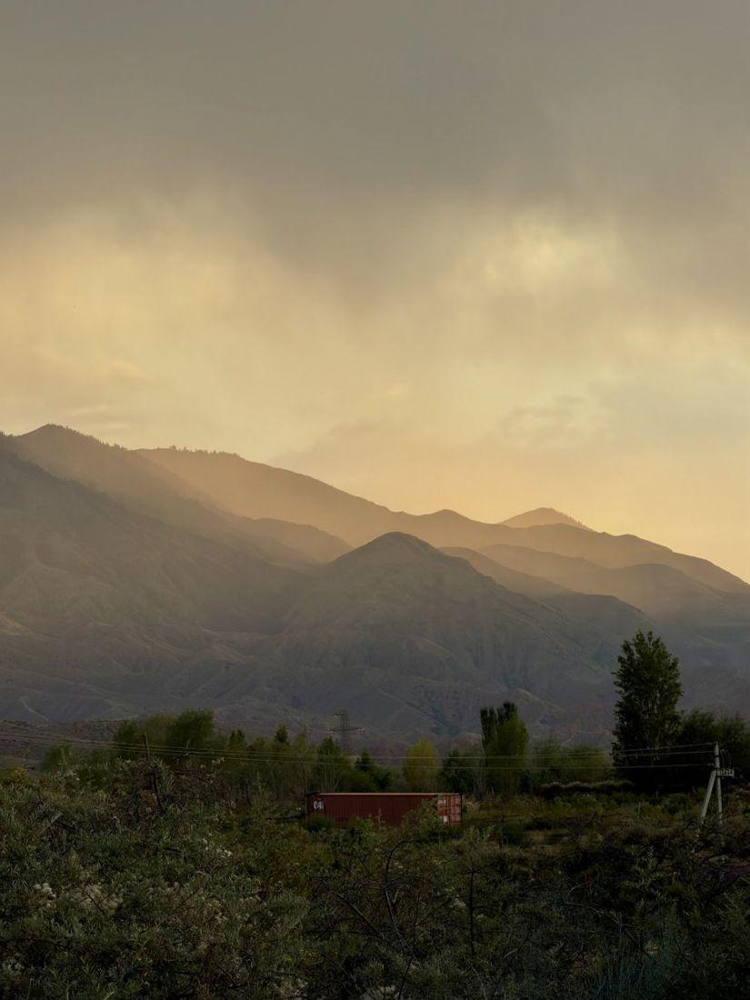
See you at Ak-Tengir
Tosor · South Shore of Issyk-Kul · Kyrgyzstan- WhatsApp+996 558 420 620
- Instagram@ak.tengir_yurtresort
- Websiteaktengir.com
Tour operators, organisers and groups — contact us directly to discuss individual terms.
 WhatsApp
WhatsApp Instagram
InstagramRest at your own pace
Spend an active day — or simply stay on site with a book, tea and a view of the mountains.
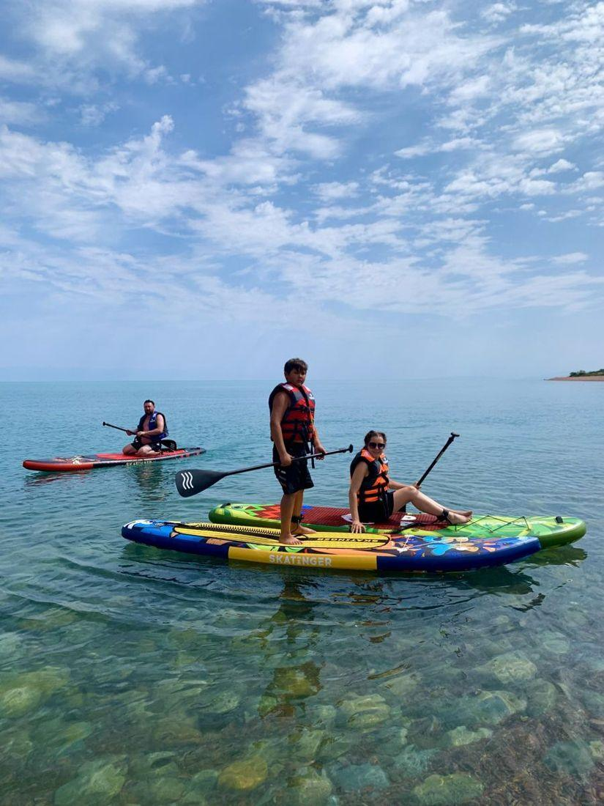
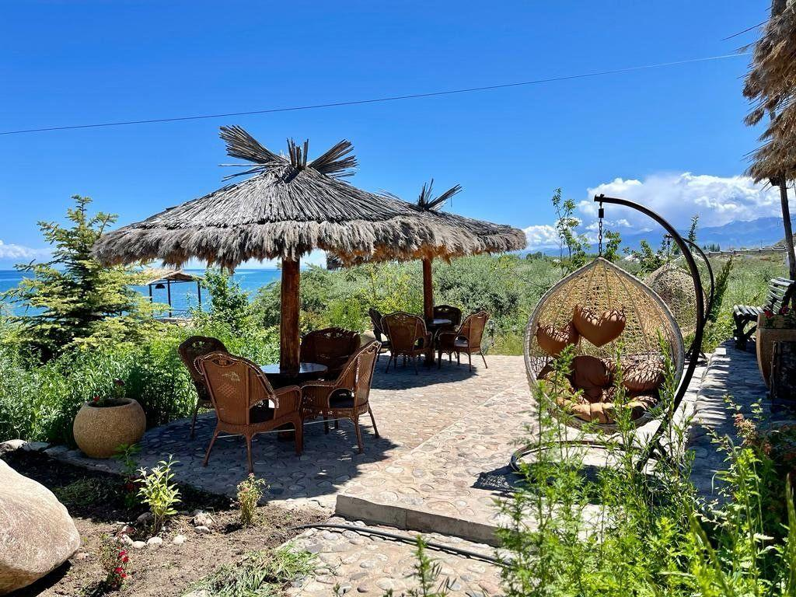
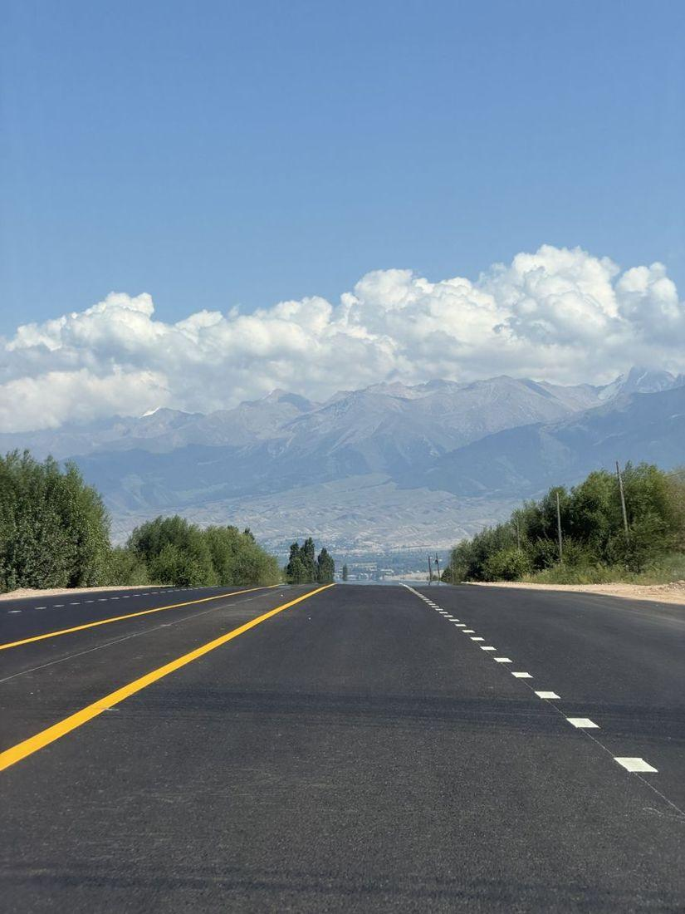
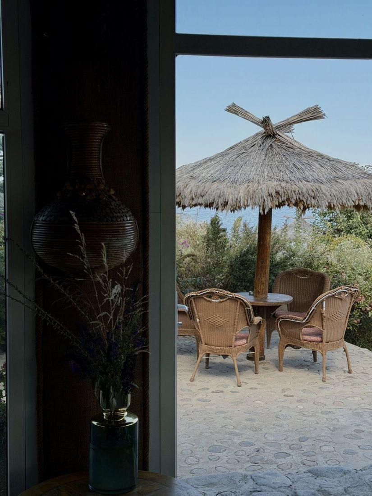
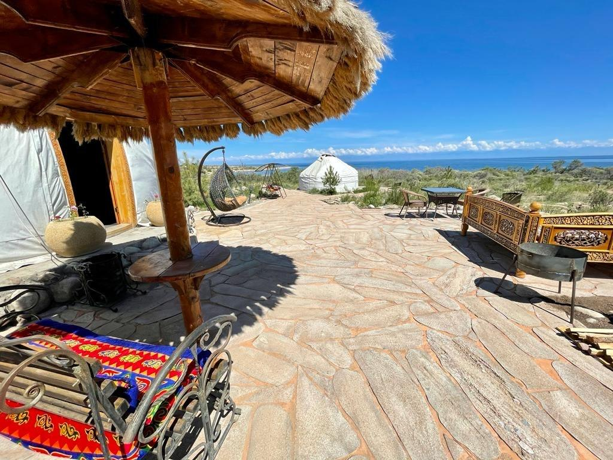
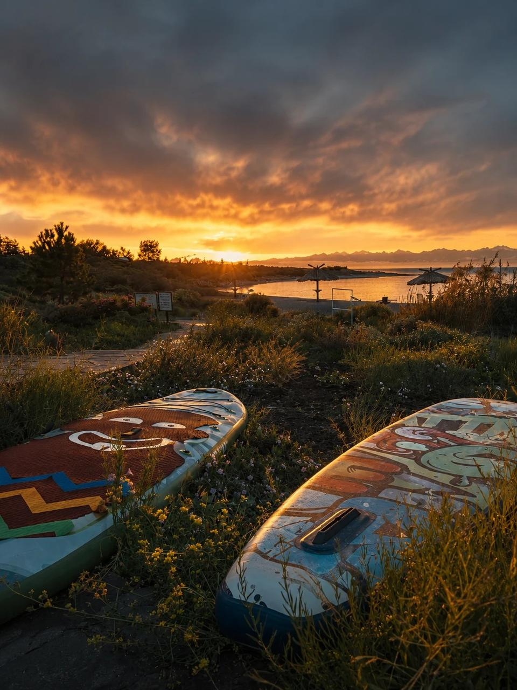
Explore the south shore of Issyk-Kul
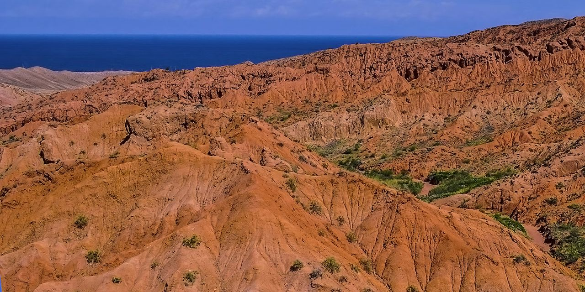
Skazka (Fairy Tale) Canyon10–15 min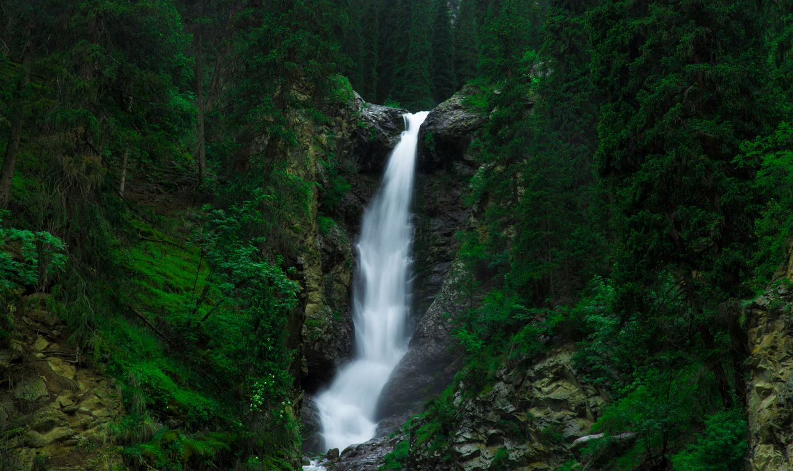
Barskoon Gorge & waterfalls45–60 min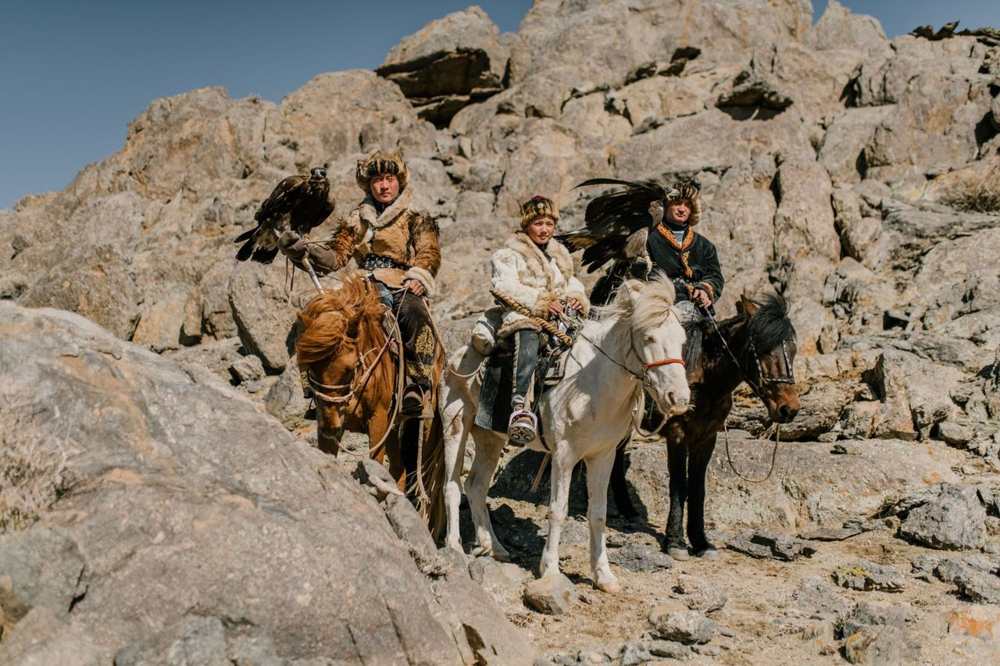
Golden eagle show45–55 min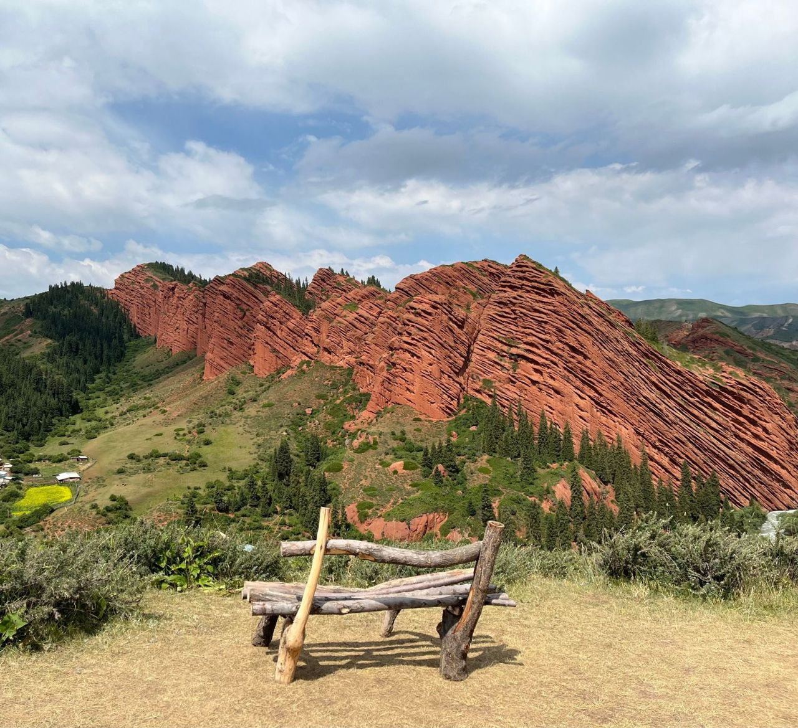
Jeti-Oguz≈ 1.5 hours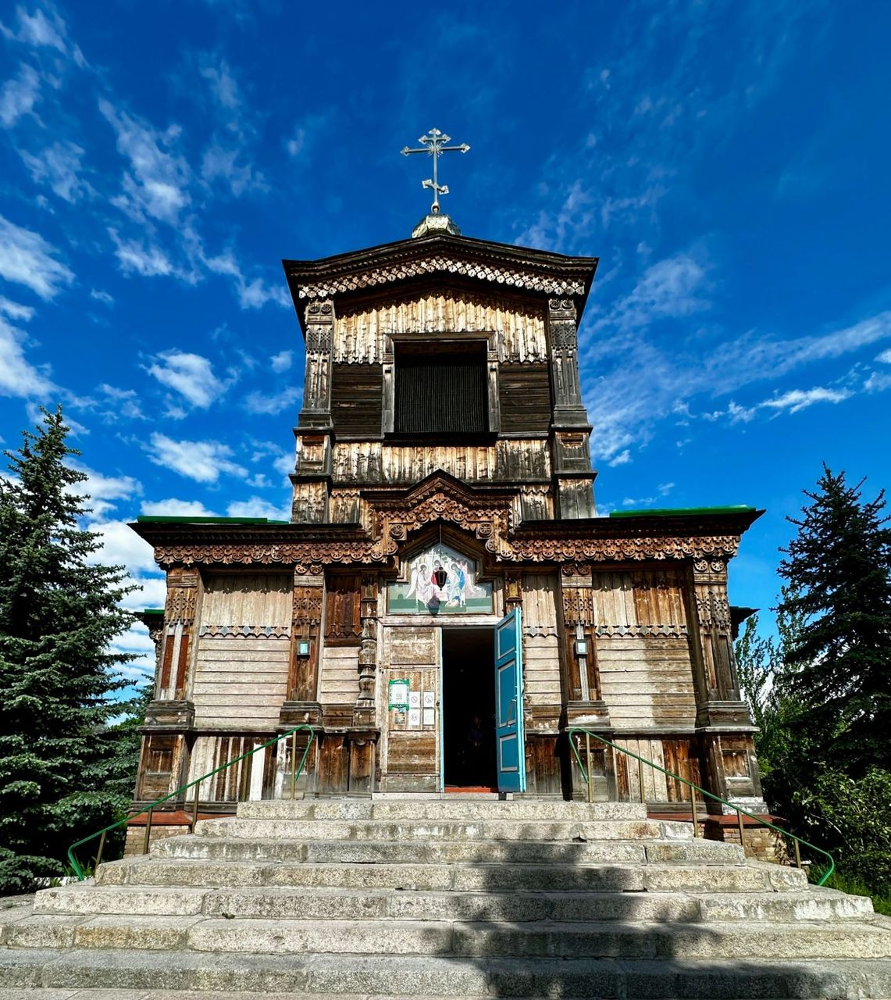
Karakol & ski base≈ 2–2.5 hours
Travel times are approximate. We can help find a taxi or a ride, arrange a group transfer and pick a tour. For large groups we will plan a custom route.
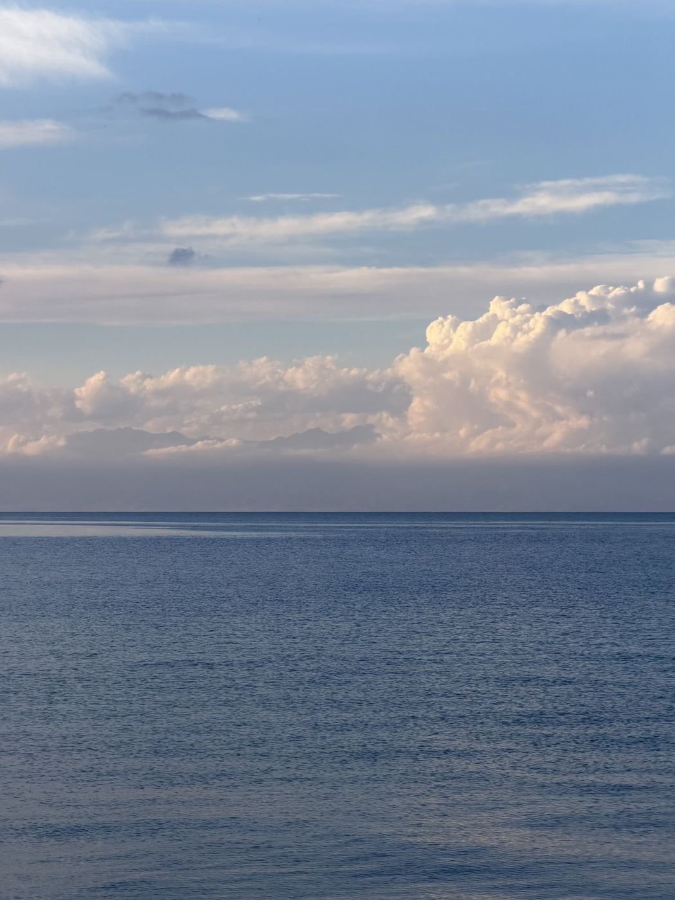
AK-TENGIR
Yurt Resort · Retreat · Banya
South Shore of Issyk-Kul · Tosor